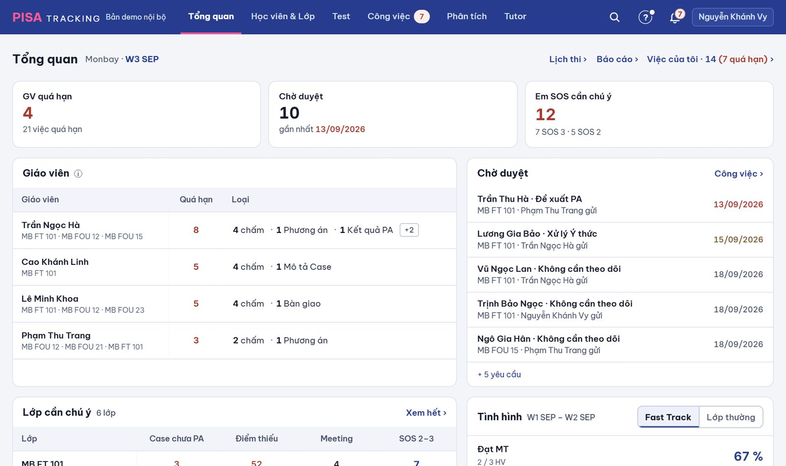
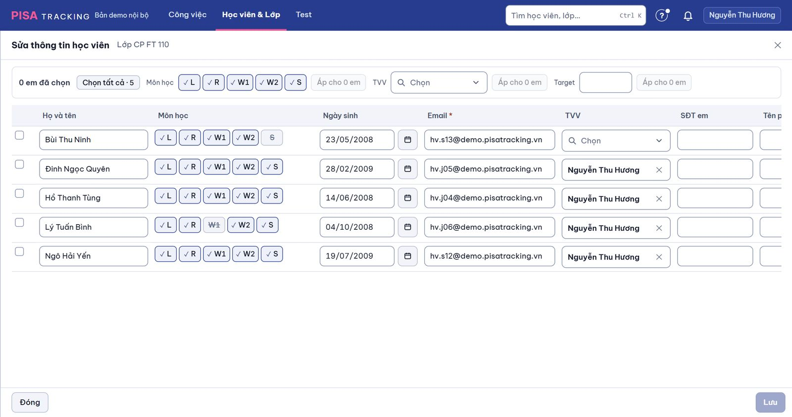
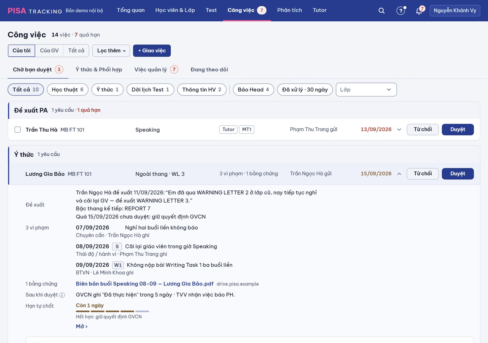
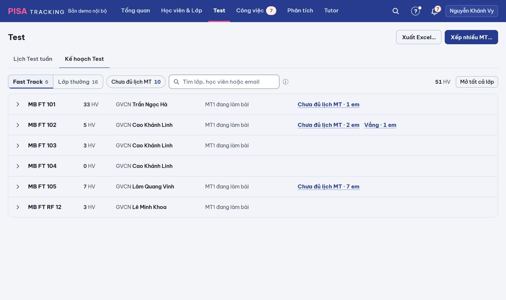
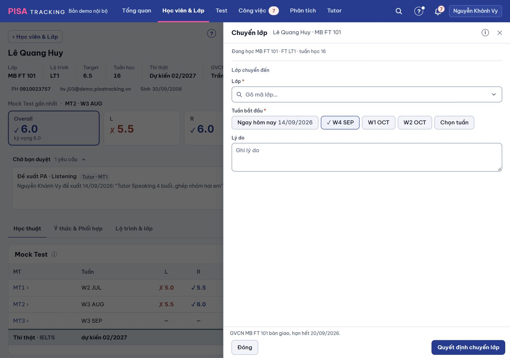
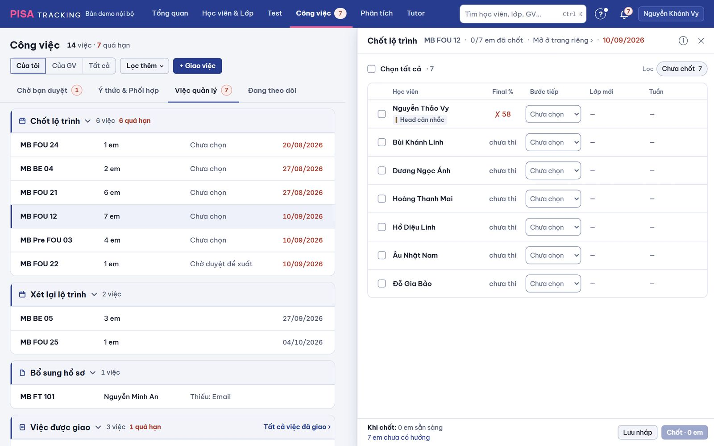
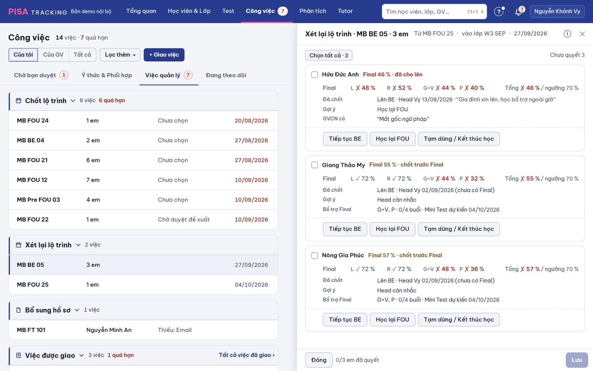
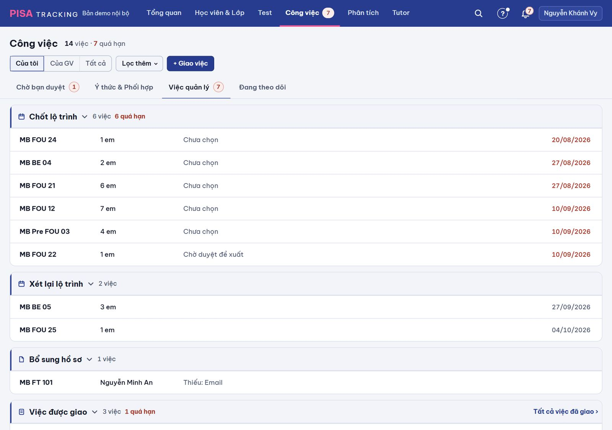
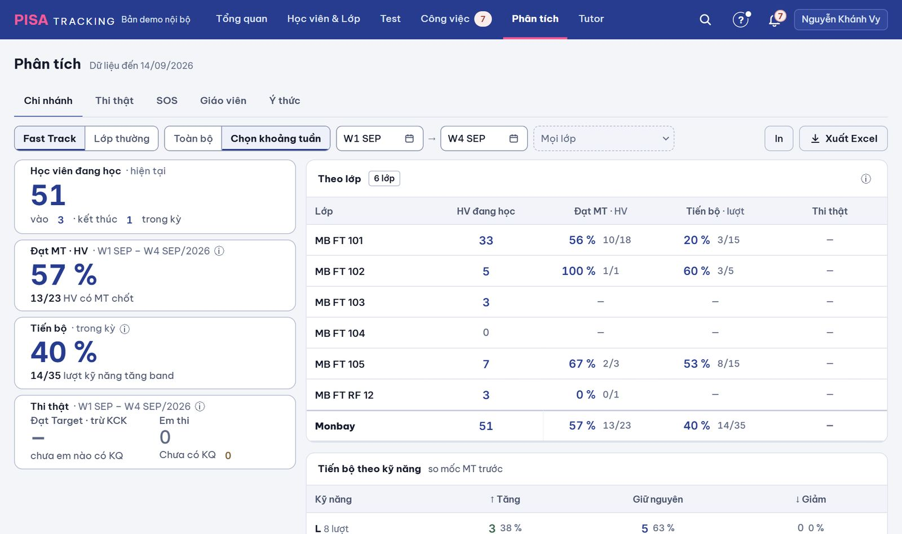

Bản 26/11/2026 — theo bản chính đang chạy. Chỗ có ô vàng “Sắp đổi” là phần đang làm, sẽ khác sau lần cập nhật tới.
Ảnh chụp từ bản demo: mọi tên người, lớp, số điện thoại là dữ liệu giả.
Tổng quan: ba ô GV quá hạn · Chờ duyệt · Em SOS cần chú ý. Bấm số để mở danh sách.
Công việc › Chờ bạn duyệt: quyết thẻ quá hạn trước (mục 4).
Công việc › Việc quản lý: việc tô đỏ (Chốt lộ trình, Bàn giao…) trước.
Chuông 🔔: Việc cần làm + Cập nhật (tin vi phạm mới gom theo lớp).
Mỗi tuần nên trước thứ Sáu
Test › Kế hoạch Test: chip Chưa đủ lịch MT → xếp cho em còn thiếu (mục 5). Từ T6 tới CN lịch MT gần bị khoá, Head phải xác nhận thêm.
Test › Lịch Test tuần: khối Quá hạn chấm → nhắc GV hoặc nhập hộ (mục 6).
Công việc › Của GV: xem việc GV đang tồn, quá hạn.
Học viên & Lớp › Mọi TVV › Chưa có TVV: gán TVV cho em mới (mục 3).
Lớp thường sắp Final
Từ thứ Hai tuần trước tuần Final: Chốt lộ trình (hạn T5 tuần đó). Sau Final: Xét lại lộ trình, Kỳ vọng lớp lên FT (mục 8).
Đầu khoá, lớp mới
Tạo lớp, thêm học viên, gán TVV, phân công GV, xếp lịch Test (mục 3, 5).
Mỗi tháng / kỳ
Phân tích (in, xuất Excel); Báo cáo PH quá hạn; số buổi Tutor (mục 13).
2. Tổng quan và Công việc của Head
Tổng quan (trang đầu): ô số chi nhánh; bảng Giáo viên (số việc quá hạn theo loại); Chờ duyệt; Lớp cần chú ý; Tình hình.
Công việc: chọn Của tôi · Của GV · Tất cả. Của tôi có tab Chờ bạn duyệt · Ý thức & Phối hợp · Việc quản lý · Đang theo dõi. Của GV có thêm Chấm điểm · Chấm Speaking · Case học thuật.
Lọc thêm: lọc theo một GV, chi nhánh, Fast Track / Lớp thường. Bấm tiêu đề mục để gập / mở.

Tổng quan của Head.Công việc › Của GV: việc của mọi GV chi nhánh, theo tab.
3. Đầu khoá: lớp, học viên, gán TVV, phân công GV
3.1. Tạo lớp, thêm học viên
Học viên & Lớp › + Lớp: tên, chương trình, tuần khai giảng.
+ Thêm học viên: chọn lớp, Tuần bắt đầu học (mặc định tuần này); gõ từng em hoặc dán vùng bảng Excel › Đọc nội dung đã dán › Thêm học viên.
Thiếu email vẫn lưu; em có việc Bổ sung hồ sơ.
3.2. Gán TVV cho học viên
App giao việc TVV theo ô TVV trong hồ sơ em. Em chưa gán TVV thì mọi việc phía TVV (Báo PH, Chốt ngày thi, Sau thi, Bổ sung hồ sơ) về Head. Bảng Thêm học viên không có ô TVV; cột “Tư vấn viên” khi dán Excel chưa gán TVV — phải gán theo các bước dưới.
Một em
Hồ sơ em › ⋯ › Sửa thông tin › ô TVV › gõ tên, chọn › Lưu.
Cả lớp
Hồ sơ lớp › ⋯ › Sửa thông tin học viên › tích các em (hoặc Chọn tất cả) › ô TVV trên thanh › Áp cho n em › Lưu.
Tìm em chưa có
Học viên & Lớp › ô Mọi TVV › Chưa có TVV › Mở tất cả.
Xong khi
Đầu hồ sơ em hiện tên TVV; ô Mọi TVV không còn em “Chưa có TVV”.
Đổi / nhầm
Chọn lại tên rồi Lưu. Việc đang mở chuyển sang TVV mới, hạn giữ. Lịch sử ở ⋯ › Lịch sử. Danh sách chỉ có TVV cùng chi nhánh của em.
Học viên & Lớp › Mọi TVV: lọc “Chưa có TVV”.

Sửa thông tin học viên (cả lớp): ô TVV + Áp cho n em trên thanh; cột TVV từng em.
3.3. Phân công giáo viên
Học viên & Lớp › tab Phân công GV: mỗi lớp một hàng, mỗi môn (L · R · W1 · W2 · S) và GVCN một ô.
Bấm ô, gõ tên GV, chọn. Chip Thiếu GV đếm ô còn trống.
Lưu cuối dòng (nhiều lớp: Lưu cả n lớp…).
Đổi GV A sang B: chọn Hiệu lựcNgay hôm nay hoặc Từ tuần …. Case / PA đang mở chuyển GV mới; GV cũ có việc bàn giao 5 ngày và còn xem lớp cũ chỉ đọc.
Tab Phân công GV.
4. Duyệt yêu cầu (Chờ bạn duyệt)
Phát sinh
GV / GVCN gửi: Đề xuất PA, Xin ý kiến, Ý thức (xử lý khác bậc mặc định, thu hồi xử lý, sửa cấp bậc đã khai), Không cần theo dõi, Thông tin HV (GVCN đề xuất đổi Target…), đề xuất chuyển lớp, xin xoá. Thẻ Báo Head chỉ để biết.
Hạn
5 ngày, tính cả ngày gửi. Quá hạn: thẻ Ý thức / thu hồi tự chốt theo GVCN; PA khác quy chế (hạn 3 ngày) tự chốt theo PA của GV; loại khác vẫn chờ bạn.
Ở đâu
Công việc › Chờ bạn duyệt (hoặc ô Chờ duyệt ở Tổng quan, thanh Việc cần làm ở hồ sơ em). Chip lọc: Học thuật · Ý thức · Thông tin HV · Báo Head · Đã xử lý · 30 ngày · Lớp.
Các bước
Bấm dòng để mở chi tiết (đề xuất, vi phạm, bằng chứng, “Sau khi duyệt”).
Duyệt, hoặc Từ chối… kèm lý do (bắt buộc). Xin ý kiến: Trả lời….
Nhiều Đề xuất PA cùng loại: tích ô các thẻ › Duyệt n yêu cầu.
Xong khi
Thẻ rời danh sách; người gửi nhận tin.
Sai thì
Hoàn tác ngay trên thông báo; về sau: chip Đã xử lý · 30 ngày › bấm dòng › Huỷ quyết định.

Chờ bạn duyệt: thẻ Ý thức mở chi tiết (đề xuất, 3 vi phạm, bằng chứng, hạn tự chốt).
Duyệt Đề xuất PA: PA mới chạy từ ngày duyệt. Từ chối: việc cũ của GV quay lại kèm lý do.
Từ chối Ý thức: vi phạm về “Cần xử lý”, bậc giữ nguyên.
5. Lịch Test: xếp MT, theo dõi chấm điểm
5.1. Xếp lịch Mock Test còn thiếu
Phát sinh
Em FT chưa có lịch MT kế tiếp (chip Chưa đủ lịch MT); lớp mới; em mới vào lớp.
Ở đâu
Test › Kế hoạch Test.
Các bước
Bấm chip Chưa đủ lịch MT để chỉ còn lớp cần xếp.
Nhiều lớp: Xếp nhiều MT…; lớp thường: Xếp lịch Test….
Một em / một kỹ năng: mở lớp, bấm ô MT › mỗi môn Dời · Vắng · Xoá › Lưu.
Thêm lượt (MT4, MT5…) hoặc Speaking Expert: + MT cuối hàng em.
Xong khi
Lớp không còn “Chưa đủ lịch MT”.
Sai thì
Dời lại (chọn tuần mới = tính lại từ đầu); lịch sử ở khối Lịch sử · n trong hộp.
Khoá cuối tuần: T6 → CN không thêm / huỷ / dời MT của tuần trước, tuần này, tuần sau. Head vẫn làm được sau một câu hỏi (Vẫn đổi lịch); GV bị chặn.
Em vắng: GV gõ -, MT dời sang tuần kế tiếp của tuần thi; vắng 2 lần thì huỷ, không có việc “xếp lại”. Muốn cho em thi lại: tự xếp lại.
Môn đã có điểm mà em thi lại: ô MT › Thi lại (điểm cũ giữ trong Lịch sử).

Kế hoạch Test: chip Chưa đủ lịch MT; mỗi lớp ghi số em cần xếp, số em vắng.
5.2. Theo dõi chấm điểm trong tuần
Test › Lịch Test tuần: chọn tuần ở ‹ W3 SEP ›. Khối Quá hạn chấm ở trên, Tuần này ở dưới; mỗi lớp một dòng: đợt · hạn chấm · tiến độ · còn chờ GV nào. Bấm dòng mở lưới điểm; Head gõ, sửa điểm được (sửa điểm đã có: ghi lý do tuỳ chọn, nhật ký ghi lại).
Lịch Test tuần: Quá hạn chấm · Tuần này; mở một lớp để xem / nhập điểm.
Hộp chấm điểm có thêm ⋯ (Vắng · Dời lịch · Huỷ điểm); nút Lưu · đóng cạnh Lưu · bài tiếp. Lịch Test tuần có lọc ô còn trống của tuần.
6. GV chấm quá hạn, việc GV tồn
Thấy ở đâu
Tổng quan: ô GV quá hạn và bảng Giáo viên (cột Quá hạn, Loại). Công việc › Của GV › tab Chấm điểm / Case học thuật… (dòng đỏ).
Hạn chấm
Mock / Test lớp thường: thứ Tư tuần sau tuần thi.
Bạn làm
Bấm số quá hạn của GV: panel bài / việc quá hạn của GV đó.
Nhắc GV: biểu tượng hai tờ giấy để chép câu nhắc dán Zalo (không có tên học viên).
Hoặc làm thay: bấm Nhập hộ ở dòng, gõ điểm (em vắng gõ -).
Xong khi
Bài có điểm; số quá hạn giảm.
Việc GV khác (Case, PA, Bàn giao, Báo cáo PH): ở Của GV, bấm dòng là mở thẳng form, có dải “Bạn đang làm thay …” — xem mục 11.
7. Chuyển lớp và bàn giao
Phát sinh
Em đổi lớp; GVCN gửi Đề xuất chuyển lớp (duyệt ở Chờ bạn duyệt).
Ở đâu
Hồ sơ em › ⋯ › Chuyển lớp…; nhiều em: hồ sơ lớp › Chọn nhiều học viên › Chuyển lớp….
Các bước
Lớp: gõ mã lớp (lớp cùng chi nhánh hiện trước).
Tuần bắt đầu: Ngay hôm nay hoặc chọn tuần.
Lý do tuỳ chọn. Khi cần: Reset bậc vi phạm; lớp thường tuần 9–10: Theo luồng chuyển tiếp lộ trình (có Test đi kèm).
Quyết định chuyển lớp.
Xong khi
Em ở lớp mới từ tuần đã chọn. GV lớp cũ có việc Bàn giao (hạn 7 ngày tính cả ngày ra lệnh); điểm cũ ở lại lớp cũ.
Sai thì
Ngay hôm nay: Hoàn tác trên thông báo. Chọn tuần sau: huỷ được tới lúc chạy (Chọn nhiều học viên › Huỷ chuyển lớp).

Panel Chuyển lớp: lớp đến, tuần bắt đầu, lý do; chân ghi hạn bàn giao.
Bàn giao quá hạn không chặn chuyển lớp; bạn thấy ở Của GV › Việc quản lý › Bàn giao, mở phiếu để Điền thay nếu cần.
8. Cuối khoá lớp thường: Chốt lộ trình, Kỳ vọng, Xét lại
8.1. Chốt lộ trình
Phát sinh
Lớp thường, từ thứ Hai tuần trước tuần Final.
Hạn
Thứ Năm tuần trước tuần Final. Quá hạn tô đỏ nhưng vẫn chốt được.
Ở đâu
Công việc › Việc quản lý › Chốt lộ trình › bấm lớp (hoặc hồ sơ lớp › ⋯ › Cuối khoá…).
Các bước
Mỗi em: cột Bước tiếp (Lên lớp, Học lại, Lên FT…), Lớp mới, Tuần. Nhiều em giống nhau: Chọn tất cả rồi áp chung.
Chưa chắc: Lưu nháp. Xong: Chốt · n em.
Xong khi
Mọi em có quyết định. Thứ Hai tuần bắt đầu máy chuyển lớp; GV lớp cũ có phiếu bàn giao.
Sai thì
Huỷ quyết định tới khi chuyển lớp; chuyển “Ngay hôm nay” thì bấm Hoàn tác trên thông báo.

Chốt lộ trình MB FOU 12: mỗi em một dòng, Lưu nháp · Chốt.
8.2. Kỳ vọng (em lớp thường lên FT)
Việc quản lý › Kỳ vọng (lớp FOU, BE, ELE có em lên FT chưa kết luận): ô em › Chốt… → Đạt · Không đạt · Trung tâm · Không đạt · Học viên › Lưu. MT0 đạt mốc thì em tự Đạt. Không đạt · Trung tâm: mỗi kỹ năng một Case + Tutor. Sửa: bấm kết quả đã chốt › Sửa.
8.3. Xét lại lộ trình
Phát sinh
Final lệch hướng đã chốt (cho lên mà điểm thấp, học lại mà điểm cao…), hoặc Mini Test bổ trợ chưa đạt.
Hạn
CN tuần 2 lớp mới. Hết hạn không quyết = Tiếp tục.
Các bước
Việc quản lý › Xét lại lộ trình › bấm lớp › mỗi em: Tiếp tục … · Học lại … · Tạm dừng / Kết thúc học › Lưu.
Sai thì
Sửa / Hoàn tác tới khi chuyển lớp.

Xét lại lộ trình: Final từng môn, ai chốt, gợi ý; ba nút cho từng em.
9. Việc quản lý khác

Công việc › Việc quản lý: Chốt lộ trình, Xét lại, Bổ sung hồ sơ, Việc được giao…
9.1. Em chưa có TVV — Head giữ việc của TVV
Báo PH (vi phạm, tình hình): tab Ý thức & Phối hợp. Gọi PH, chọn Đã báo PH / Chưa liên hệ được, ghi Nội dung, Lưu. Hạn 5 ngày tính cả ngày lưu.
Chốt ngày thi, Sau thi (kết quả thi thật + Chọn bước tiếp, hạn 7 ngày), Bổ sung hồ sơ: tab Việc quản lý.
Cách làm giống cẩm nang TVV. Gán TVV cho em (mục 3.2) thì việc mới về TVV.
9.2. Thiếu dữ liệu: xếp lịch MT, nhập ngày thi cho PA
PA quy chế “đến MT” / “đến lúc thi” đang chạy mà em chưa có lịch MT kế / ngày thi. Bấm Xếp lịch hoặc Nhập ngày thi ở dòng. Không cần nhắc: Bỏ qua (khôi phục ở mục Đã bỏ qua).
9.3. Phân công người phụ trách Case
Case mở mà lớp thiếu GV môn hoặc GVCN. Tab Case học thuật › Phân công / Chọn người phụ trách › chọn GV (lưu ngay). Chọn nhầm: đổi ở ô người phụ trách trong Case.
9.4. Báo cáo PH quá hạn
Đợt quá hạn hơn 7 ngày mà lớp còn em chưa đủ: một dòng mỗi lớp × đợt. Bấm Báo cáo PH ›: nhắc GV hoặc viết hộ. GV vẫn giữ việc tới khi viết xong. Đợt không cần: Không báo cáo đợt này.
9.5. Báo PH kết quả Test lớp thường
Ở tab Ý thức & Phối hợp › Báo PH (vd “Final 45%”): việc của GVCN, Head làm được — gọi PH, ghi kết quả.
Báo PH thống nhất: kết quả Progress / Final lớp thường và Trao đổi với gia đình (Phối hợp SOS) sinh thẳng việc TVV báo PH (không có TVV → Head), nội dung máy điền sẵn; Head + CX theo dõi. GVCN / Head thôi bước này.
10. Giao việc và theo dõi
Khi nào
Việc ngoài luật (giáo trình, tuyển tutor, nhắc một GV…) hoặc giao thêm vào đúng mục việc của người nhận.
Ở đâu
Nút + Giao việc ở đầu Công việc.
Các bước
Chọn Việc chi nhánh hoặc Giao GV theo lớp + kỹ năng.
Tên công việc, Hạng mục (chọn mục có sẵn như Báo PH, Chấm điểm… thì việc nằm đúng mục đó ở Công việc người nhận; không chọn → tab Việc được giao), Người phụ trách, Hạn.
Tuỳ chọn: người theo dõi, lớp / HV liên quan, + Việc con, Lặp lại hằng tuần / tháng, tệp, mô tả.
Giao việc.
Theo dõi
Việc quản lý › Tất cả việc đã giao ›: lọc Quá hạn · Chờ người khác · Cần quyết định · Vừa hoàn thành. Bấm dòng: cập nhật tiến độ, sửa hạn (lý do tuỳ chọn), Dừng lặp.
+ Giao việc.
Ở mọi việc Báo PH, Meeting, Hỏi tình hình: khối Phụ trách · Hạn · Theo dõi đầu panel — Head đổi người phụ trách (Đổi, Về mặc định), đặt hạn, thêm người theo dõi. Không bắt lý do; có Hoàn tác và lịch sử.
11. Làm thay GV, GVCN, TVV
Head mở việc của người khác là làm được ngay, không cần bấm “Làm thay”. Đầu panel có dải “Bạn đang làm thay {người}”; lịch sử ghi tên bạn.
Nhập điểm
Của GV › Chấm điểm, hoặc Lịch Test tuần › bấm lớp. Bài quá hạn: Nhập hộ.
Case, PA
Của GV › Case học thuật: Xác nhận Case, Mô tả, Chọn PA, Ghi kết quả PA. Lưu nháp là tạm; nút lưu ở chân là chốt (đổi lại: Sửa kết quả).
Xử lý vi phạm
Ý thức & Phối hợp › Xử lý vi phạm: Nâng 1 bậc → Xác nhận xử lý; cách khác → Head Lưu xử lý là chốt ngay (không qua duyệt). Không cần xử lý: Lưu không xử lý + lý do.
Phối hợp SOS
Ý thức & Phối hợp › Phối hợp SOS › bấm lớp › Xác nhận ở dòng em, ghi nội dung, Lưu.
Hồ sơ lớp › tab Báo cáo PH › chọn đợt › Viết … / Đặt nhanh; + Đợt báo cáo, Không báo cáo đợt này; xuất PDF / Excel.
Việc TVV
Như mục 9.1; TVV cùng chi nhánh cũng làm thay nhau được.
Ghi vi phạm: hồ sơ lớp › tab Ý thức & Phối hợp › + Vi phạm / Nhắc nhở (Head không dạy môn nào thì để trống Môn). Sửa cấp bậc vi phạm đã khai của GVCN → thành thẻ chờ Head duyệt; Head tự sửa thì áp ngay.
12. Tạm dừng, Lưu trữ, khôi phục thứ đã xoá
Tạm dừng / Kết thúc học: hồ sơ em › ⋯ (nhiều em: hồ sơ lớp › Chọn nhiều học viên). Ô Có thể quay lại học bật = Tạm dừng. Em vào Lưu trữ, hạn dừng. Nhầm: Hoàn tác.
Lưu trữ › (đầu Học viên & Lớp): tab Lớp đã kết thúc · Học viên đã lưu trữ · Đã xoá. Mỗi em: Tổng kết · Quay lại học (một hoặc nhiều em). Head mở lại được cả em đã Kết thúc học.
Xoá nhầm (Case, PA, vi phạm, tệp…): Hoàn tác trong 10 giây; quá 10 giây: tab Đã xoá › Khôi phục (giữ 30 ngày).
Em vào Lưu trữ thì mọi việc của em dừng hẳn ở mọi nơi (chấm điểm, Case / PA, Ý thức, Báo PH, Phối hợp, việc giao, Tutor), không tính quá hạn; Quay lại học không mở lại việc cũ. Việc ghi kết quả thi thật giữ; em ở Lưu trữ không cần Chọn bước tiếp.
13. Tutor, Phân tích
Tutor (menu trên): bảng Người dạy; Head thêm / sửa tutor chi nhánh mình, gộp tên gõ tay trùng nhau; xem số buổi theo người dạy × tháng, Xuất Excel. Tutor không sinh việc — GV ghi số buổi ở Kết quả PA.
Phân tích: tab Chi nhánh · Thi thật · SOS · Giáo viên · Ý thức. Chọn Toàn bộ hoặc Chọn khoảng tuần; bấm số mở danh sách tại trang; In (A4 ngang), Xuất Excel.
Hồ sơ giáo viên: bấm tên GV ở Tổng quan / Phân tích — số theo khoảng tuần, việc đang tồn; sửa kỹ năng của GV.

Phân tích › Chi nhánh.
Tra nhanh trong app: nút ? trên thanh trên (trang Hướng dẫn, đọc được cả hướng dẫn của vai khác).